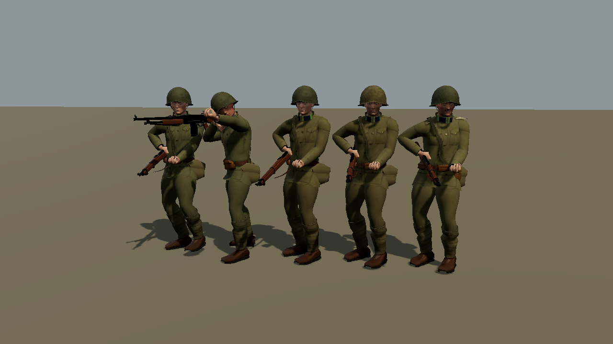
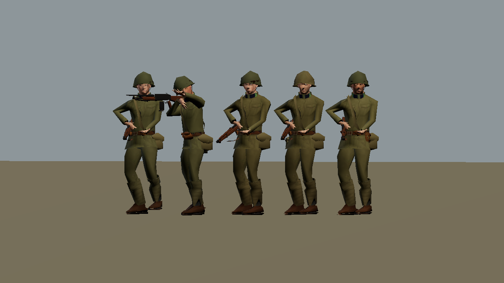
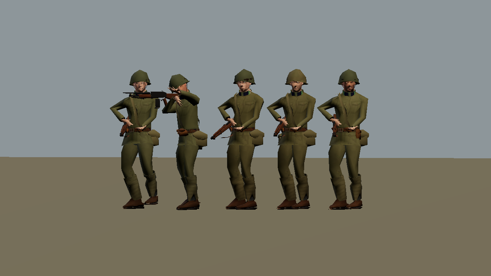
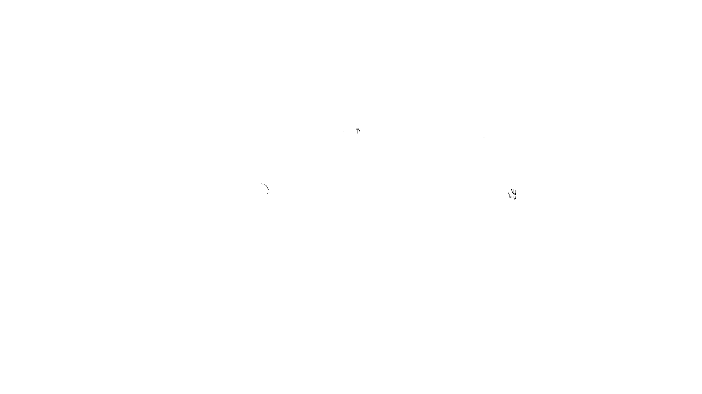

pl-5m-high - draw calls 73 -> 23, differing pixels 0, max channel diff 0


de-5m-high - draw calls 61 -> 21, differing pixels 4, max channel diff 24
pl-30m-high - draw calls 73 -> 23, differing pixels 9, max channel diff 85
de-30m-high - draw calls 61 -> 21, differing pixels 59, max channel diff 140
pl-80m-high - draw calls 37 -> 12, differing pixels 91, max channel diff 149



de-80m-high - draw calls 31 -> 11, differing pixels 226, max channel diff 162